<!DOCTYPE html>
<html lang="es"></html>


<head>


<title>Dia 5</title>
<meta name="keywords" content="Atenas, Viajes, Grecia">
 <meta name="author" content="Antía" >
 <meta name="description" content="Pagina sobre el viaje a Grecia">
 <meta charset="utf-8">
 <link rel="icon" href="img/favicon-32x32.png" type="image/png">
 <link rel="stylesheet" href="estilosdias.css">
</head>
<body>
    <nav>
        <ul>
        
            <li><a href="index.html">Portada</a> </li>
            <li><a href="Dia1.html">Día 1</a> </li>
            <li><a href="Dia2.html">Día 2</a> </li>
            <li><a href="Dia3.html">Día 3</a> </li>
            <li><a href="Dia4.html">Día 4</a> </li>
            <li><a href="Dia5.html">Día 5</a> </li>
            <li><a href="Dia6.html">Día 6</a> </li>
            <li><a href="Dia7y8.html">Días 7 y 8</a> </li>
        </ul>
    </nav>
<h1>Día 5 (Noticias y museo)</h1>
<article>
 <div class="foto_izquierda">
    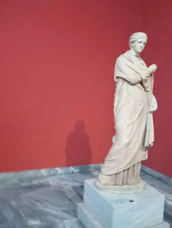 
   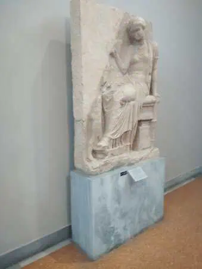
   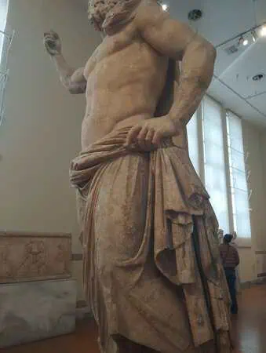
   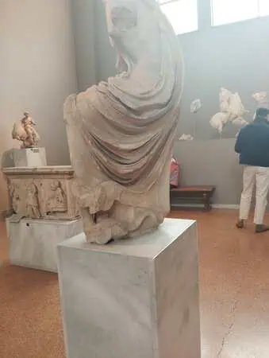
   
    <p>Este dia ya de por sí comenzó raro pues no 
        sabíamos que íbamos ha hacer, desayunamos y 
        los profesores nos comentaron que ese dia dormiriamos
         en el mismo hotel ( habían reservado un dia mas por si ocurría
          algo inesperado, que ocurrió) ;tras estas noticias nos 
          comentaron que iríamos a ver el museo arqueológico de
           Atenas, la caminata fue de 20 minutos aprox a eso hay
            que sumarle unos 15 minutos de espera para entrar al 
            museo, la visita libre del mismo fue de más o menos una
             hora y media. 
    </p>
    
 </div>
</article>
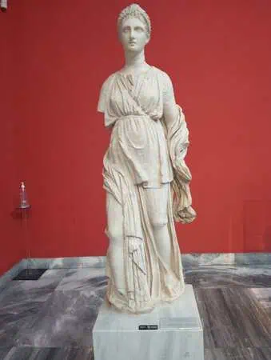
   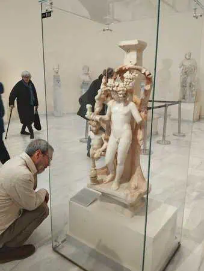
    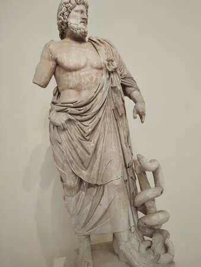
    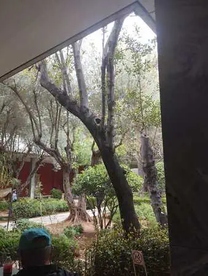
    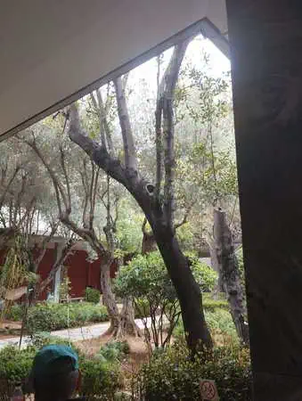
    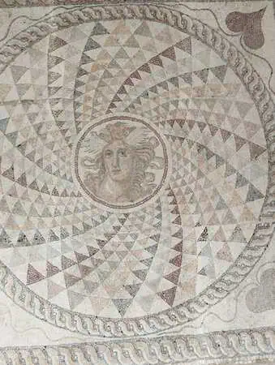
<article>
   <div class="foto_derecha">
     <p>La verdad la visita estuvo genial ,y
         todo estaba tranquilo, cuando terminamos fuimos a comer,
          los profesores nos comentaron que comeríamos en un hotel
           cercano al nuestro(esto se organizó en último momento), 
           la comida estuvo muy buena(lo malo que yo estaba con catarro
           ) y después de eso algunos decidieron quedarse en el hotel
           , mientras otros íbamos al centro a dar una vuelta. 
    </p>
    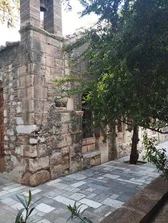
   </div>
</article>
<article>
    <p>Estuvimos unas 2 horas fuera y cuando volvimos al hotel nos
         fuimos a nuestras habitaciones a descansar un rato 
         antes de cenar. En la cena los profesores nos comentaron
          que ya sabían cómo íbamos a volver; esto consistía en
           dividir el grupo completo en 3 más  pequeños: <br>
        uno de 11 se iría al dia siguiente con Juan <br>
        uno de 13 se iria al mediodia del viernes con Marce <br>
        y el último de 12 se volvería la noche del viernes con Jesica.
        </p>
    
</article>
<article>
    <p>Este día junto con el siguiente fueron los más novedosos 
        y, en mi opinión, divertidos pues todo fue sobre la 
        marcha,nada estaba organizado.
    </p>
</article>


</body>